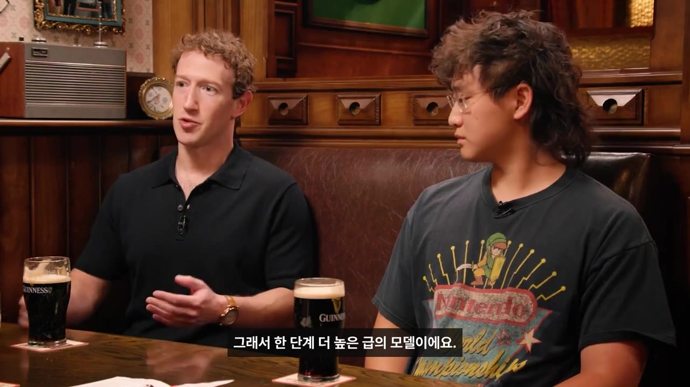
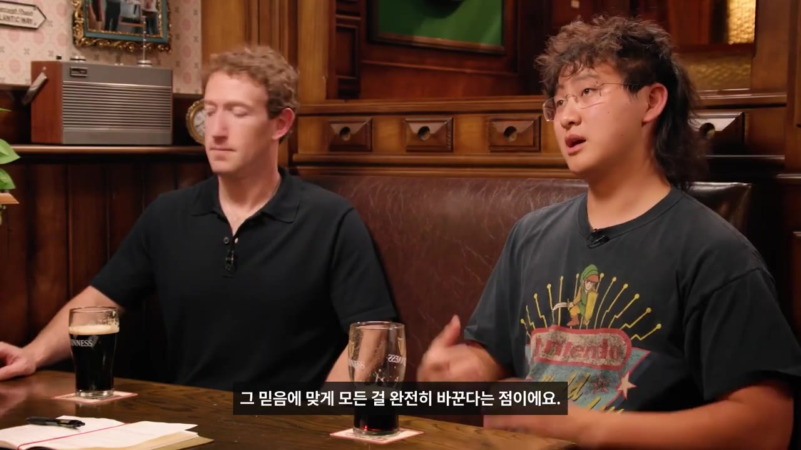
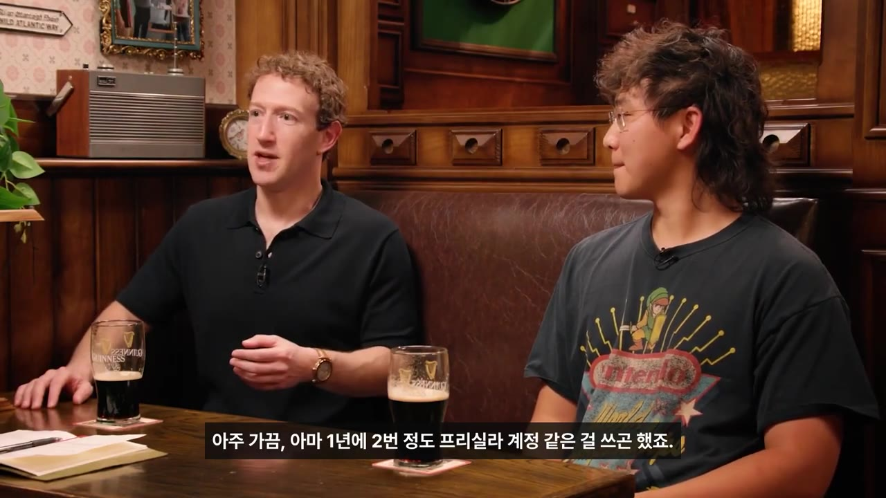
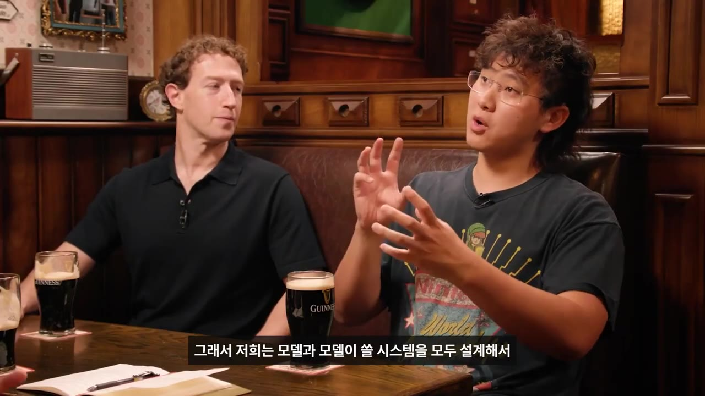
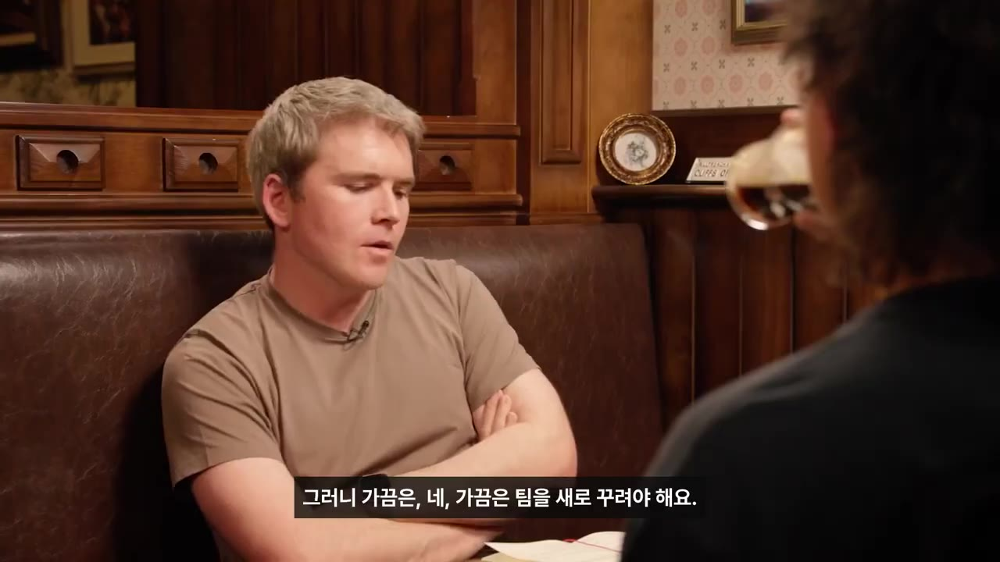
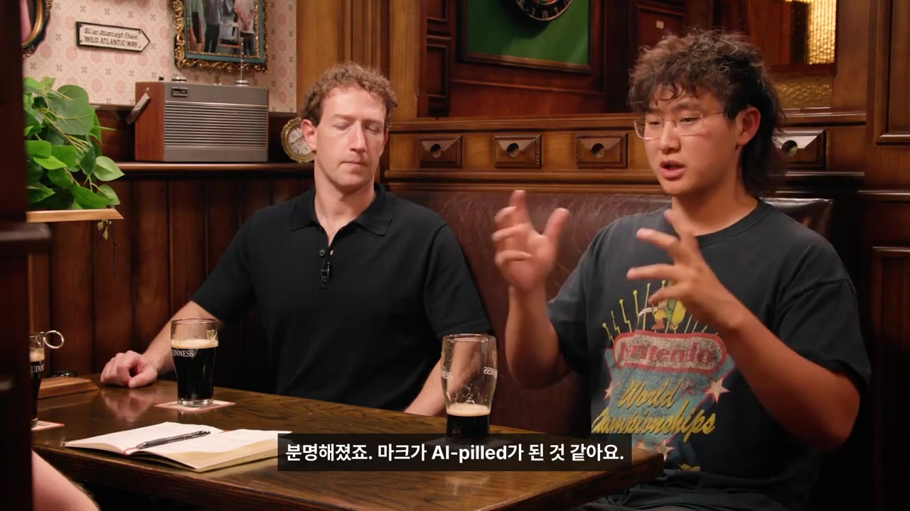

메타 AI 수장이 첫 회의에서 "10걸음 뒤로 가야겠다" 느낀 이유 | 저커버그 × 알렉산더 왕
🎙️ 자막 대신 영상 음성을 받아써서 정리 (en (음성 받아쓰기·GPU))
▶ 원본 영상 보기한눈에 보기
- 메타는 2년 전만 해도 프런티어 모델(업계 최고 수준 AI 모델)이 없다는 말을 들었지만, 알렉산더 왕이 이끄는 새 팀이 이보다 훨씬 큰 차세대 모델 'Muse Wonder'를 내놨습니다. 이 모델은 개인 업무와 직장 업무를 대신 처리하는 에이전트에 맞춰 만들어졌습니다.
- 저커버그는 AI 투자를 "어려운 난이도의 창업", 곧 린 스타트업과 정반대라고 말합니다. 모델이 나오기도 전에 1,000억~2,000억 달러를 쓰기로 결정했다는 이야기도 나옵니다.
- Muse는 사람들이 구매를 에이전트에게 통째로 맡기기 시작한 첫 제품 중 하나라고 소개됩니다. 저커버그는 세 살 딸과 주말 베이킹을 할 때 Muse가 Instacart로 재료를 미리 주문해 준다고 말합니다.
- 대담자 존 콜리슨은 다른 CEO라면 하지 않았을 네 가지를 짚습니다: 기존 팀 재시작, 인재에 쓴 엄청난 돈, 프런티어 모델을 한 번도 만들어 보지 않은 왕에게 맡긴 것, 두 달 동안 일정을 비운 것입니다.
- 왕은 첫 회의에서 "추론 모델은 필요 없다"는 말을 듣고 "10걸음 뒤로 가야겠다"고 느꼈다고 합니다. 새 조직은 기술을 모르는 관리자를 두지 않고 리더도 직접 코드를 쓰는 문화를 강조합니다.
⚠️ 이 영상은 원본 대담(Cheeky Pint) 일부에 한국어 해설을 붙인 것입니다. 받은 자막에서 한국어 해설 부분은 영어로 잘못 받아쓰여 뜻을 알기 어렵습니다. 그래서 이 노트는 주로 출연자들의 영어 발언을 바탕으로 정리했습니다.
이런 분께 도움이 됩니다
- 메타의 AI 전략이 어떻게 바뀌었고 Muse 모델이 어떤 성격인지 빠르게 알고 싶은 분
- 대기업 안에서 팀을 새로 짜거나, 큰 결정을 내리고 실행하는 리더십 사례를 찾는 관리자·창업자
- AI 에이전트가 실제 생활(쇼핑·장보기)에 어떻게 들어오는지 궁금한 분
핵심 내용
메타의 반전, Muse Wonder (1:23)
해설자는 "2년 전 메타에는 프런티어 모델이 없다는 말이 있었다"고 소개합니다(해설 자막상 불분명). 그리고 Muse Wonder가 그와 다른 새 모델이라고 설명합니다. 알렉산더 왕의 설명은 이렇습니다.
- 만든 과정: 가지고 있는 가장 큰 서버 묶음(클러스터)에 바로 학습시키는 방식이 아니었습니다. 여러 단계 크기의 모델을 차례로 만들어 가며 올라갔습니다. 사전학습(pre-training)은 얼마 전에 끝났고, 그 뒤 사후학습(post-training, 사람이 쓰기 좋게 다듬는 단계)을 거쳐 공개했습니다.
- 크기: 이전보다 "훨씬 큰 다음 등급의 모델"이라서, 생각의 섬세함이 다르게 느껴질 것이라고 합니다.

- 목표: 개인 업무와 직장 업무에서 최고의 에이전트(사람 대신 일을 수행하는 AI) 모델이 되는 것입니다.
- 중점 능력: 아주 좋은 기억력, 그리고 복잡한 작업을 끝까지 해내는 지속력입니다.
💡 Muse는 "챗봇"보다 "일을 대신 끝내는 에이전트"를 겨냥한 모델이다.
마크의 결단 (3:14)
저커버그는 AI 투자를 이렇게 설명합니다.
| 구분 | 린 스타트업 | AI(저커버그의 설명) |
|---|---|---|
| 방식 | 작게 해 보고 되면 투자를 늘리고, 다시 확인한 뒤 또 늘린다 | 효과가 증명되기 훨씬 전에 거대한 투자를 결정해야 한다 |
| 예시 | — | 데이터센터에는 "수년 동안" 투자해 왔다 |
| 기다리면 | 위험이 줄어든다 | "완전히 뒤처진다" |
- 작년 말에는 모델을 보기도 전에 "1,000억 달러인지 2,000억 달러인지 모를 수표를 쓰면서 '알렉스, 이거 정말 될까?'라고 했다"고 말합니다. 그는 이를 "어려운 난이도의 창업(entrepreneurship on hard mode)"이라고 부릅니다.
- 왕이 본 저커버그의 특별한 점은, 무언가가 옳다고 결론을 내리면 모든 것을 그 결론에 맞게 완전히 바꾼다는 것입니다. 생각이 뚜렷하고 성공한 창업자라도 대부분은 기존 일정은 그대로 둔 채 "말만 하고 누군가 해 주길 바라는" 관성에 머문다고 대비합니다.

💡 AI에서는 "증명되면 투자"가 곧 "뒤처짐"이다 — 결정했으면 일정까지 통째로 바꿔야 한다.
에이전트가 일상이 될 때 (5:48)
왕은 Muse를 사람들이 구매를 에이전트에게 완전히 맡기는 첫 제품 중 하나라고 말합니다. 그동안 '에이전트 쇼핑'은 가능성으로만 이야기됐지만 이제 실제로 일어나고 있고, 왕 자신도 Muse가 찾아 준 좋은 차(tea)를 샀다고 합니다.
저커버그는 세 살 딸 Aurelia와의 주말 베이킹 사례를 소개합니다.
- 주중 아이디어 나누기
- 재료 자동 주문
- 토요일에 바로 시작
- 1주중 아이디어 나누기
한 주 동안 딸과 Muse에게 주말에 무엇을 구울지 말합니다. 딸이 실제로 없는 엉뚱한 레시피를 내도 Muse와 주고받습니다. Muse 음성 모드는 목소리를 구분해 누가 저커버그인지 알아듣습니다(아직 정식 출시 전). (6:47)
- 2재료 자동 주문
Muse가 Instacart로 재료를 주문합니다. (7:11)
- 3토요일에 바로 시작
재료가 제때 도착해 있어서 장보는 시간 없이 바로 베이킹을 시작합니다. (7:20)
- 행동이 바뀐 점: 예전에는 Instacart를 1년에 두 번쯤, 배우자 Priscilla의 계정으로 썼습니다. Muse에게 맡기려고 자기 계정을 새로 만든 뒤로는 일주일에 한두 번 씁니다.

- 저커버그는 이 기회가 "전환율(구매로 이어지는 비율)이 20% 좋아지는 정도"가 아니라고 봅니다. 예전이라면 생기지 않았을 새 사용자와 새 습관이 생긴다는 뜻입니다.
💡 에이전트는 기존 구매를 효율화하는 데서 그치지 않고, 없던 구매 습관을 만든다.
성능과 '액티브 메모리(active memory)' (8:23)
- 메타가 직접 잰 바로는 개인·직장 에이전트 평가에서 최고 수준(state of the art)이라고 합니다.
- 믿을 수 있는 에이전트를 만들려면 기억력이 꼭 필요하다고 보고, 다른 곳보다 "불균형적으로 많이" 투자했다고 합니다. 자체 평가 도구 'Memory Bench'로 이를 확인한다고 합니다.
- 여기서 말하는 기억력은 며칠·몇 주·몇 달 전에 말한 내용을 기억해 두었다가 나중 작업에 활용하는 능력입니다. 한 작업을 하는 동안만 쓰는 작업 기억(컨텍스트)과는 다릅니다.
- 존 콜리슨은 OpenClaw를 즐겨 쓰지만, 대화를 요약·압축(compaction)하는 방식 때문에 오래 쓰면 기억이 꽤 불안정하다고 지적합니다.
- 왕은 모델 자체와 모델이 쓰는 시스템을 함께 설계해 더 강한 기억을 만들었다고 설명합니다. 핵심 기능은 바깥 도구(harness)가 아니라 모델 안에 있다고 강조합니다.

알렉산더 왕, 다른 CEO라면 안 했을 네 가지 (10:34)
존 콜리슨이 짚은 네 가지와 저커버그의 답입니다.
| # | 다른 CEO라면 안 했을 일 | 저커버그 측 설명 |
|---|---|---|
| 1 | 기존 노력이 부족했다고 공개적으로 인정하고 팀을 새로 시작함(MSL 신설) | Llama 4의 진행 방향에 만족하지 못해 팀을 다시 꾸렸습니다. 처음부터 완전히 다시 시작할 생각은 아니었습니다. 최고 인재들을 만나 보니 "처음부터 새로 시작하는 느낌"이어야 매력적이라는 걸 알게 됐습니다. Llama·FAIR의 좋은 인재도 데려왔습니다 |
| 2 | 인재에 "터무니없는" 돈을 씀 | 핵심은 '인재 밀도(talent density)'라고 언급합니다 |
| 3 | 프런티어 모델을 한 번도 학습시켜 본 적 없는 왕에게 맡김 | 모든 연구소의 리더와 연구 책임자를 만나 본 뒤 "알렉스가 적임자"라고 강하게 확신했습니다 |
| 4 | 두 달 동안 일정을 비우고 이 일만 함 | 다른 CEO라면 사업 검토, 이사회, 고객 일정을 그대로 유지했을 것이라고 콜리슨이 대비합니다 |
- MSL은 메타가 새로 만든 AI 조직입니다. 정식 이름은 영상에 나오지 않으며, 일반적으로 Meta Superintelligence Labs로 알려져 있습니다(보충).

💡 때로는 팀을 재부팅해야 한다 — 그리고 그건 CEO 일정부터 비우는 데서 시작된다.
대기업의 관성에서 벗어나기 (13:43)
- 기술을 모르는 관리자를 두지 않음: 직속 부하가 많은 것 자체가 목적이 아닙니다. 핵심은 기술을 모르는 관리자가 없다는 점입니다. 왕이 200명에게 일일이 관리자로서 지원해 준다는 뜻도 아니라고 합니다.
- 기술 감각을 유지함: 연구자들 사이에는 잘 알려진 패턴이 있습니다. 기술 실무자가 세부를 다루지 않는 자리로 옮기면, 스스로 생각하는 것보다 훨씬 빨리 기술을 모르게 된다는 것입니다. 변화가 빠른 AI 분야에서는 특히 위험하다고 봅니다. 그래서 사람들이 에이전트를 직접 쓰고, 코드를 직접 써야 한다는 원칙을 중요하게 여깁니다.
- "10걸음 뒤로" 일화: 왕은 합류 직후 첫 회의에서 "가장 중요한 목표는 기한을 정해 좋은 추론 모델(reasoning model, 단계적으로 생각하는 모델)을 만드는 것"이라고 제안했습니다. 그런데 기존 팀의 핵심 리더 한 명(지금은 메타를 떠남)이 "소비자에게 추론 모델이 필요한가? 일반 모델이면 된다"고 답했습니다. 왕은 "회사를 잘못 골랐다"는 생각이 들 만큼 가슴이 내려앉았고, "10걸음 뒤로 물러나야겠다"고 느꼈다고 합니다.
- 그 뒤 저커버그가 AI에 완전히 빠져들어("AI pilled") 회사 전체 방향을 바꾸면서 상황이 달라졌다고 말합니다. 마지막 해설(16:45 이후)의 '적응'에 관한 결론은 자막상 불분명합니다.

💡 빠른 분야에서 리더가 손을 놓으면, 방향을 잘못 잡아도 알아채지 못한다.
기억할 숫자·인용
- 1,000억~2,000억 달러: 모델을 보기 전에 쓰기로 했다는 투자 규모(저커버그 표현은 "I don't know, like $100 billion or $200 billion")
- 연 2회 → 주 1~2회: Muse를 쓴 뒤 저커버그의 Instacart 사용 빈도
- 20%: "전환율 20% 개선 정도가 아니다"라는 비교 기준
- 두 달: 저커버그가 일정을 비우고 이 일에만 매달린 기간
- 200명: 왕이 관리자로서 일일이 지원하는 게 아니라고 언급된 규모
- "It's like entrepreneurship on hard mode. It's like the opposite of lean startup." — 저커버그
- "Sometimes you have to reboot a team." — 존 콜리슨
- "I've got to take like 10 steps back." — 알렉산더 왕
생각해볼 점
- 'state of the art'라는 성능 주장과 Memory Bench는 메타가 직접 재고 만든 평가입니다. 외부의 독립된 비교 결과는 영상에 나오지 않습니다.
- 1,000억~2,000억 달러 투자는 메타 정도의 자금력이 있어야 가능한 전략입니다. "린 스타트업과 정반대"라는 교훈을 일반 기업에 그대로 적용하기는 어렵습니다(내 의견).
- 이 영상은 원본 대담에서 해설자가 고른 다섯 장면입니다. 전체 맥락이나 반대 의견은 원본 영상(Cheeky Pint)에서 확인해야 합니다.
바로 해볼 일
- 이번 주에 반복하는 생활 업무(장보기·예약 등) 하나를 골라 AI 에이전트에게 맡겨 볼 수 있는지 시험해 보기
- 내 팀에서 "증명되면 하겠다"며 미뤄 둔 결정 하나를 적고, 기다리는 비용을 따져 보기
- 관리 업무를 하느라 손을 놓은 실무 도구(코드·AI 도구 등)를 이번 주에 직접 30분 써 보기